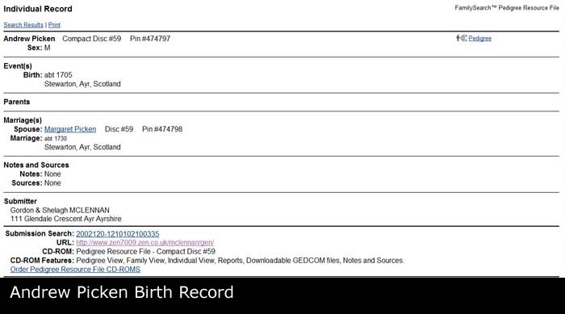
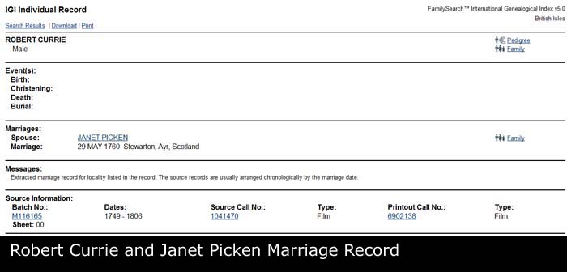

| Name | Full Name | Andrew PICKEN |
| Forename | Andrew | |
| Surname | PICKEN | |
| Sex | Male | |
| Birth | About 1705, Stewarton, East Ayrshire, Scotland | |
| Spouse | Margaret b. 1709 [Family] | |
| Children | 1. Janet PICKEN b. 28/10/1736 | |
| Change Date | Date | 20/04/2011 |
| Time | 21:21 | |
Andrew PICKEN was born about 1705 in Stewarton, East Ayrshire, Scotland. One daughter listed. |  |
| i | Janet PICKEN was born on 28/10/1736 in Stewarton, East Ayrshire, Scotland. |  |